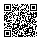
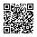
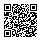

Hiddify
Plain URI list: VLESS, VMess, Trojan, Shadowsocks, Hysteria2 and TUIC

Scan or copy URL
hiddify.txthttps://nimadn.github.io/iran-proxy-feed/hiddify.txt
Conventional HTTP, SOCKS4 and SOCKS5 proxies are collected from several sources, deduplicated and tested.
A conventional proxy is published only after:
Previously verified proxies remain available for up to 30 days after their most recent successful test.
Copy the URL for your application, or scan its QR code. Each feed uses that application's supported protocols and expected subscription format.
Plain URI list: VLESS, VMess, Trojan, Shadowsocks, Hysteria2 and TUIC

Scan or copy URL
hiddify.txthttps://nimadn.github.io/iran-proxy-feed/hiddify.txt
Base64 URI list: VLESS, VMess, Trojan, Shadowsocks, Hysteria2, TUIC and SOCKS5

Scan or copy URL
v2rayn.txthttps://nimadn.github.io/iran-proxy-feed/v2rayn.txt
Plain URI list: VLESS, VMess, Trojan, Shadowsocks and SOCKS5 only

Scan or copy URL
happ.txthttps://nimadn.github.io/iran-proxy-feed/happ.txt
Native JSON configuration: verified HTTP, SOCKS4 and SOCKS5 proxies

Scan or copy URL
sing-box.jsonhttps://nimadn.github.io/iran-proxy-feed/sing-box.json